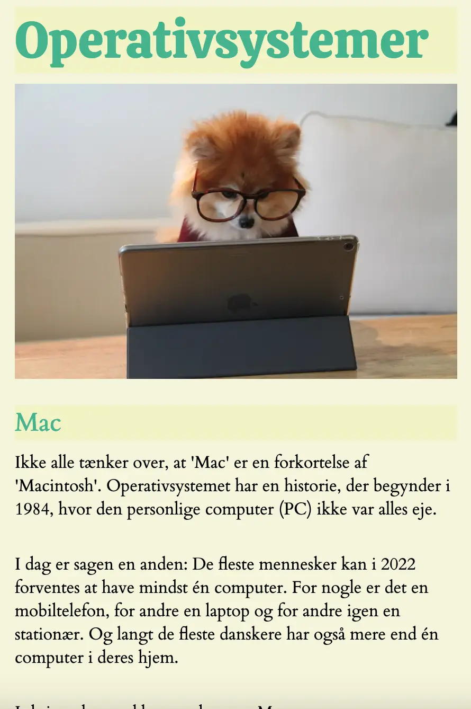
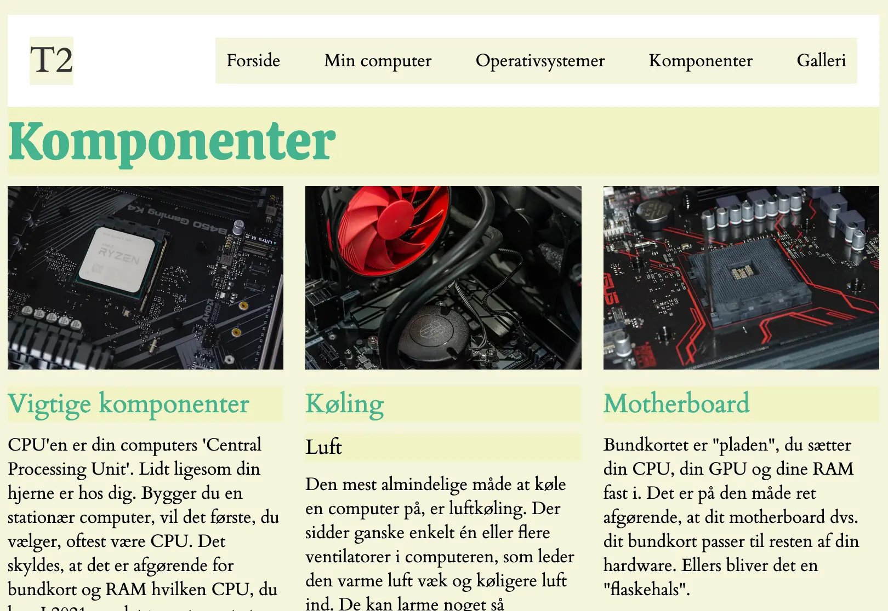
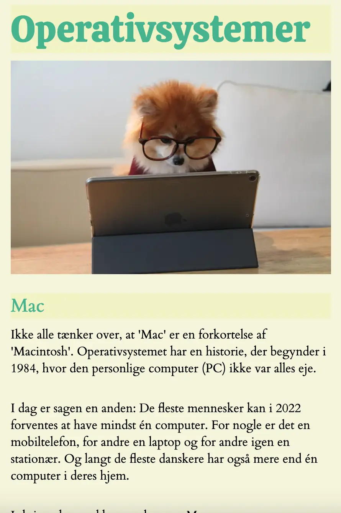
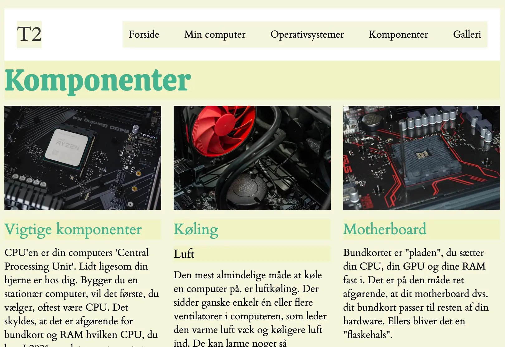

Grundlæggende web
Tema 2 - Studiestartsprøven
Formål
I dette tema var formålet at få kendskab til de mest anvendte redskaber i en multimediedesigners værktøjskasse.
Redskaberne udgør fundamentet for resten af min uddannelse. Jeg blev desuden introduceret til grundlæggende faglige begreber indenfor design af digitale brugergrænseflader, digital indholdsproduktion, digital kommunikation og responsivt webdesign.
Til sidst lærte jeg at sætte websider op i html og css.

Link til hjemmeside

Løsning, proces og læring
I dette tema blev jeg introduceret til digitale brugergrænseflader. Jeg lærte om gestaltlovene, som skal gøre det mere behageligt for brugere at benytte et site. Om typografi, styletiles og wireframes. Ift billeder har vi snakket om ophavsrettighed og metadata, og brugt forskellige værktøjer, fx squoosh, til billedbeskæring og til at ændre filformater til webp. Webp er et billedformat, der er designet til at give højere billedkvalitet med mindre filstørrelse sammenlignet med andre formater som fx JPG, JPEG og PNG. Det fører derfor til hurtigere indlæsningstider på websites og giver derved en bedre brugeroplevelse.
Vi lærte at kode i html og css, hvilket er to nye kodningssprog for mig, som jeg skulle lære. Det var også allerede her i dette tema, at jeg lærte at kode mobile-first, og derefter til desktop, da det er mere simpelt at kode til mobil. Da der er forskellige opstillinger til hhv. mobil og tablet, lærte jeg om media queries, som gav mig mulighed for at kunne tilpasse stylingen af hjemmesiden baseret på skærmstørrelsen.
Jeg lærte om grids og flex, som kunne opdele layoutet på mit site. Ud fra denne læring, kodede jeg det responsive site i Visual Studio Code med relevante plug-ins fx Prettier. Jeg brugte FileZilla til at få overført kodningen til mit domæne. Inden opgaven blev afleveret har jeg valideret siderne i HTML-validering og CSS-validering, Firefox/Chromes inspicering/developertools.

  
 